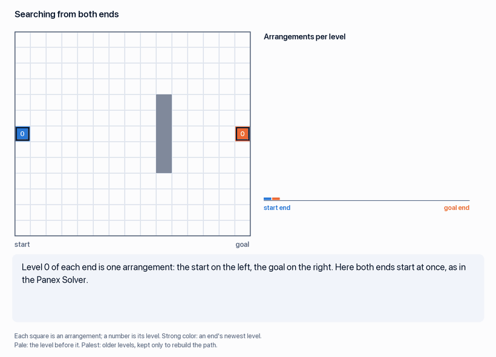

Searching from both ends: how the Sliding and Panex solvers meet in the middle
What the level search keeps, how its two ends find each other, which levels it drops to save memory, and how it rebuilds the path once the ends have met
Summary
- Both solvers find the fewest moves by building levels. Level 1 is every position one move from the start, level 2 every position two moves away, and so on. A position is an arrangement of the pieces in a sliding puzzle and a stacking of the pieces in Panex; this page says arrangement for both.
- From both ends the levels only have to go half as deep. On Problem 3 of "Abe 1 to 6 Heart" (47 moves) the two ends held 18.4 million arrangements when they met. The same search from the start alone held 123 million by level 33, with 14 moves still to go and each level 1.23 times the one before.
- The ends have met when a new level shares an arrangement with the other end's newest level. Levels are sorted lists of numbers, so the test is one walk along two sorted lists, made while the new level is written. Only the other end's newest level has to be checked, and the first meeting always gives a path with the fewest moves.
- Each end needs only its two newest levels to build the next. The older levels are kept for one purpose, rebuilding the path. They move to disk when memory is short, and where the rules of the puzzle allow it every second one is deleted when the disk fills, then every fourth, and so on.
- Once the ends meet, the path is traced from the meeting arrangement back to the start and on to the goal, one level at a time. Where levels were deleted, a small search out from the arrangement at hand fills the gap.
- Panex has a shortcut. When the goal is the mirror image of the start, as in every tower swap, only one search runs, and it meets its own mirror image.
- Fewest moves is a shortest path
- Why two ends beat one
- What a level is made of
- Building the next level
- When the goal end starts, and which end grows
- How the ends know they have met
- What is kept and what is dropped
- Working back to the start and to the goal
- Measurements and limits
1. Fewest moves is a shortest path
A sliding puzzle and a Panex puzzle ask the same question: what is the smallest number of moves that turns the start into the goal? Think of every arrangement the puzzle can be in as a dot, and draw a line between two dots when one move turns one into the other. The question is then the shortest route from the start dot to the goal dot.
The dependable way to find a shortest route is to search breadth first: find everything one move from the start, then everything two moves away, then three, never skipping ahead. Each of these sets is a level. The first level that contains the goal gives the answer, and because no level was skipped, no shorter route can exist. If a level comes out empty before the goal turns up, every reachable arrangement has been seen and the puzzle has no solution.
The cost is the size of the levels. In most puzzles each level is larger than the one before by a fairly steady factor, so the levels near the end of a long solution are enormous. Everything on this page is about paying less of that cost.
ShapeLogic has two searches of this kind. The Sliding Puzzle Solver counts one move as one piece sliding anywhere it can reach while the others stay put. The Panex Solver counts one move as one piece transferred from one column to another; the Stacking Solver uses the same search whenever its puzzle fits. They were written separately and differ in detail, but the plan is the same, and the differences are called out as they come up.
2. Why two ends beat one
Suppose every level is twice the size of the one before and the solution is 40 moves long. A search from the start builds levels 1 to 40, and the last of them alone holds about a trillion arrangements. Now search from the goal as well. Each end only has to go 20 levels deep before the two meet, and a level 20 holds about a million. Two searches of a million are nothing beside one of a trillion. In general, where one search does work that grows like bd for a growth factor b and a solution of d moves, two searches do about 2 × bd/2: roughly the square root.
Figure 1 shows this on a real solve. The puzzle is Problem 3 of "Abe 1 to 6 Heart", a board of blocks with small pieces riding in their holes, solved in 47 moves. The blue and orange areas are the levels the two ends built before they met: 9.2 million arrangements each. The dashed line is the same search made from the start alone. Its first 23 levels are the blue area exactly, and then it keeps climbing. When the run was stopped at level 33 it held 123 million arrangements and each level was still 1.23 times the last; at that rate the levels it still needed would have brought it to around two billion.
The saving depends on the levels growing. A puzzle whose levels stay narrow gains little from a second end, which is why the sliding search does not always start one (section 5).
3. What a level is made of
An arrangement is one number. The sliding search gives every piece a field of bits that holds the number of its position on the board, and packs the fields into a key of 64 bits, or 128 when 64 are too few. Two identical pieces that have changed places give the same key, so they are searched as one arrangement. The Panex search writes the three columns out piece by piece, five bits a piece, into a 128-bit key.
A level is a sorted list of keys with no repeats. Sorting is what makes everything else on this page cheap. Two sorted lists can be compared, merged or subtracted from one another in a single pass from front to back, without looking anything up.
The two searches store the list differently:
- Sliding. A level is written once, in rising order, in blocks of up to 128 keys. A block stores the gaps between neighbouring keys rather than the keys, and the arrangements of one level are close together, so most keys take a few bytes instead of 8 or 16. In the solve of Figure 1 the search held 18.4 million arrangements in about 100 MB. The same format serves in memory and in a file, so a level can live in either place and the search reads it the same way.
- Panex. A level is a plain array of 16-byte keys in memory. The search also folds each stacking together with its twin, the stacking with the board mirrored and the two towers' pieces exchanged, which halves every level of a tower swap.
4. Building the next level
Figure 2 shows one step. It takes the newest level of one end and produces the level after it.
- Expand. Every core takes blocks of the newest level. For each arrangement in a block it works out every move and writes down the key of each arrangement a move leads to.
- Sort. Each core sorts what it has gathered, 65,536 keys at a time, and merges those pieces into longer sorted runs as they fill its share of the memory.
- Merge and subtract. The runs are merged into one sorted stream, each core taking one range of keys. A key that appears twice is written once. A key that is already in this end's newest level, or in the level before it, is dropped. What is left is the next level.
Why two levels are enough. A search like this normally needs a list of everything it has ever seen, so that it does not walk in circles. Here it does not, as long as every move can be undone. Take an arrangement in level d and make a move. If the result had first been seen in some much older level, then undoing that move would lead from the older level straight to our arrangement, which would then belong at most one level after it and not in level d. So the result can only be in level d − 1, d or d + 1, and checking the two newest levels catches every repeat. This is the heart of the memory saving: the search has to hold a frontier two levels thick, not everything behind it.
The exception: moves that cannot be undone. With Allow Nested Slides a piece can carry the pieces nested in it, and a piece that carries others can close round a piece it passes. That move cannot be made backwards the way it came. An arrangement reached by such a one-way move could be in any older level, so the sliding search treats those arrangements separately: it looks each one up in all of the end's older levels, which it keeps merged into a few large sorted sets for the purpose. One-way moves are rare, so this costs little. In the solve of Figure 1, level 23 of the start end had 2.3 million arrangements; 17,546 were reached by one-way moves, and all but 1,207 of those turned out to be old. Without the lookup the search would have gone over them again, level after level.
5. When the goal end starts, and which end grows
The goal has to be one arrangement. A search from the goal needs a single place to start. In a sliding puzzle that means every piece has a goal position. (Copies of a piece that each have a goal count as one arrangement when the goals hold them in exactly one way.) If any piece may end anywhere, there are many goal arrangements, and the search runs from the start alone, testing everything it reaches against the goal as it goes.
Sliding, without nested slides. The search begins from the start alone and brings in the goal end once a level holds a million arrangements. Smaller puzzles finish before a second end would pay for itself. Starting late loses nothing: the one-ended search has been checking for the goal all along, so the goal cannot be nearer than the levels already built.
Sliding, with nested slides. The goal end starts with the first level. It has to make the moves backwards, and for a one-way move that takes some care: for each piece that holds others, the search tries every part of what it holds as the group that might have arrived together, and keeps the arrangements from which the forward move really leads here. This is available when nesting is whole (not Allow Partially Nested) and no piece could ever hold more than six others; otherwise the search stays at the start.
Panex. Both ends start at once.
Which end grows. Before each step the search compares the two ends' newest levels and expands the smaller one. The ends therefore meet where the work is least, which is not always the middle. In Figure 1 they met at 24 moves from the start and 23 from the goal. On a puzzle that is cramped near the goal and open near the start, the goal end would go much deeper than the start end.
6. How the ends know they have met
It is natural to picture the search holding everything both ends have found and comparing the two piles all the time. It does something much cheaper that comes to the same thing.
The test. While a new level is being written, its keys come out in rising order. The other end's newest level is already a sorted list. The search walks the two lists together, as in Figure 3: it moves forward in whichever list has the smaller key, and if the two keys are ever equal, that arrangement is in both ends and the search is over. Each list is read once. For the sliding search this walk is one more stream in the merge that writes the level, so it adds almost nothing to the step.
Why the other end's newest level is enough. Suppose a new arrangement of the start end were sitting in one of the goal end's older levels, say j moves from the goal. The arrangement it was made from is one move away from it, so that one is at most j + 1 moves from the goal and lies in a level the goal end already has. But that arrangement belongs to an earlier level of the start end, so the two ends would have shared it already, and the search would have stopped then. The first shared arrangement can only ever be in the other end's newest level, and that is the only one compared.
Why the first meeting is a shortest path. Say the true answer is L moves, and follow one shortest path. While the two ends' depths add up to less than L they cannot share anything, because a shared arrangement would give a path shorter than L. At the step where the depths first add up to L, the level just built contains the arrangement of that shortest path at exactly that distance, and the same arrangement is in the other end's newest level. So the ends meet at that step and not later, and the path through the meeting arrangement has L moves. The Solver's "moves deep" during a solve is this sum of the two depths.
Panex and the mirror. In a tower swap the goal is the start seen in a mirror. Whatever the search from the start finds at depth d, a search from the goal would find the mirror image of it at the same depth. So the Panex Solver runs only the search from the start. After each level it makes the mirror image of that level, sorts it, and walks the level against it. A shared stacking is one that is d moves from the start and whose mirror image is too, which puts the stacking itself d moves from the goal: a path of 2d moves. It also walks each new level against the mirror of the level before, which catches paths of odd length, 2d − 1. The level-10 swap takes 31,537 moves, so its search met its mirror at depth 15,769, one search doing the work of two.
7. What is kept and what is dropped
The step in Figure 2 reads two levels of one end and one of the other. Everything older is dead weight as far as the search itself goes. It is kept for a different reason: when the ends meet, the search knows one arrangement on the path and how far it is from each end, and nothing else. The older levels are what the path is rebuilt from (section 8). Because they are only needed at the very end, they can be stored in the cheapest way available, and some can be thrown away.
7.1 Sliding puzzles
- Memory first. Every level, run and merged set is either in memory or in a file in the search's own folder, and the search reads both alike. A small search never touches the disk.
- Then disk. At the end of each step, if the sets in memory take more than half the memory the search may use, the largest ones that are not in use, the older levels, are written to files until they fit again. The two newest levels of each end stay where they are. A level in a file costs no memory at all: even its index is left on disk until someone reads it.
- Then every other level. By default the levels may take half the free disk space, up to 200 GB. When the kept levels leave too little room for the next step, every second one is deleted, so that levels 0, 2, 4, … remain. If that happens again, levels 0, 4, 8, … remain, and so on. Since the levels grow, the newest few are most of the bytes; thinning the old ones keeps the search going for several more levels each time.
- Not with nested slides. The one-way lookups of section 4 need every older level, so none can be deleted. The older levels are kept whole, and a long search is limited by the disk. If the budget fills, the search saves itself and pauses, and carries on from there once space has been freed or the budget raised.
- Sharing. The app's Search memory setting is one budget for all the searches running at once. When a second solve starts, each search's share shrinks, and the first search simply sends its older levels to disk sooner. It is never restarted.
7.2 Panex
- The frontier stays in memory. The two newest levels of each end, and the mirror level, are arrays in memory. If a level would not fit, the search saves itself and stops.
- Older levels in memory, then on disk. The older levels are kept in memory while they take less than a quarter of the budget. Past that they are all written to the search's folder and freed, and from then on each new level is written to disk while the next one is being worked out.
- Then every other level. As in the sliding search: when the files outgrow the disk budget, every second one is deleted, and the interval doubles each time it happens again.
- With no folder at all the old levels are simply dropped once they stop fitting. When the ends meet, the search knows the meeting stacking, and it solves the two halves, start to meeting and meeting to goal, as two new and much smaller searches, halving again as often as it has to.
How much this saves shows best on the largest solve so far. The level-10 Panex swap visited about 860 billion stackings; kept as a list, that would be 13.8 TB. Its widest level held about 130 million keys, 2 GB. The search ran in the memory of a laptop because it only ever held the frontier.
| Sliding Puzzle Solver | Panex Solver | |
|---|---|---|
| A key | 64 or 128 bits, a field for each piece | 128 bits, five bits for each piece |
| A level | Sorted, stored as gaps; in memory or in a file | Sorted array of 16-byte keys in memory |
| Goal end starts | At a level of a million arrangements; with nested slides, at once | At once; not at all for a mirrored goal |
| Meeting test | New level walked against the other end's newest, inside the merge | New level walked against the other end's newest, or against its own mirror image |
| Repeats | Two newest levels; one-way moves looked up in all older levels | Two newest levels (every transfer can be undone) |
| Older levels | To disk when memory is half full; thinned when the disk fills (never with nested slides) | To disk past a quarter of the memory; thinned when the disk fills |
| Halves the levels by | Treating identical pieces as one | Folding each stacking with its twin |
8. Working back to the start and to the goal
When the ends meet, the search has one arrangement, m, and two numbers: m is, say, 24 moves from the start and 23 from the goal. The path is rebuilt in two halves (Figure 5).
One step back. To go from an arrangement in level d to one in level d − 1, the search works out the arrangement's moves, as it would to expand it, and looks the results up in level d − 1. At least one of them is there, because that is how the arrangement got into level d. It takes the first one found, in the fixed order the moves are tried, so the same search always returns the same path. Then it repeats from there, down to level 0. This costs one small lookup for each move of the solution.
The goal half is the same walk through the goal end's levels, from m to the goal. With nested slides the goal end's levels were built by making moves backwards, so here the forward moves of each arrangement are looked up in the level one nearer the goal. The two halves are then joined at m.
Across a gap. If the levels were thinned, the level just below may be gone. The search then finds the nearest kept level below, say four levels down, and runs a small search of its own out from the arrangement at hand: four levels, built exactly as in section 4. The last of them is walked against the kept level, as in the meeting test, and the first arrangement they share is the next fixed point of the path. The search steps back through its four small levels to connect the two, throws them away and carries on from the new point. These small searches start from a single arrangement and go only as deep as the gap, so they are tiny beside the search that made the levels. This is the trade that thinning makes: disk space saved during the search, for a little searching again at the end.
Panex works the same way, with two differences. It always uses the small search between saved levels once its levels are on disk, and the saved level is read from its file as a stream rather than loaded. And for a mirrored goal there is no goal end to walk through: the second half of the path is traced through the start's levels in the mirror, and each stacking is turned back as it is written into the path. As soon as the ends meet, the Panex search notes the meeting stacking in its saved state, so stopping it while it traces loses none of the search.
Every path a search returns is checked in the tests move by move: each step has to be a legal move from the arrangement before.
Figure 6 puts sections 4 to 8 together on a small board, where each square stands for an arrangement and a step to a neighbouring square for a move. Both ends start at once, as in the Panex Solver. Each step grows the narrower end, drops what is in that end’s two newest levels, and walks the new level against the other end’s newest one. Once they share a square, the path is rebuilt outwards from it, one level at a time.

9. Measurements and limits
The sliding search went from one end to two for nested slides in release 1.8.2. The table compares the release before with the current search on the four problems of "Abe 1 to 6 Heart", a board of blocks with nested slides, solved with optimized paths (the companion page explains those). Times are single runs of the release build on a MacBook Air M4 with ten threads.
| Problem | Moves | From the start alone | From both ends | Arrangements, both ends | Peak memory |
|---|---|---|---|---|---|
| Problem 1 | 50 | not solved | 8.9 s | 28,444,092 | 489 MB |
| Problem 1 modified | 50 | 1,565 s | 5.1 s | 16,973,771 | 270 MB |
| Problem 2 | 56 | 9,172 s | 19.2 s | 55,003,437 | 991 MB |
| Problem 3 | 47 | 2,825 s | 6.1 s | 18,412,361 | 364 MB |
Run on the same build with only the second end switched off, Problem 3 took 321 s, 399 million arrangements, 6.6 GB of memory and 2.1 GB of disk. From both ends it took 6.1 s, 18.4 million arrangements and 364 MB, and never touched the disk. Both found 47 moves. (That one-ended run used a saving that only a search from the start can use: it counts the several places a small piece can rest inside one cell of the board as one. That is why its total is below the two billion that Figure 1 points to, where every stop is counted at both ends.)
The two ways of searching were also compared on 5,669 generated boards, 4,117 of which have a solution: the outcome and the number of moves were the same on every one.
Where the search still runs from one end
- A sliding puzzle in which a piece may end anywhere, or a piece that is not a copy has several goal positions. The goal is then not one arrangement.
- Nested slides with Allow Partially Nested, or with a piece that could hold more than six others. The moves cannot yet be made backwards there.
- A sliding puzzle without nested slides whose levels never reach a million arrangements. It does not need a second end.
What limits a search from both ends
- Sliding, nested slides: the disk. Every level of both ends is kept, at about 13 bytes an arrangement on the largest board tried.
- Sliding, no nested slides: the disk as well, but much later, since old levels are thinned.
- Panex: memory. The newest levels have to fit, and the level-11 swap would need about 16 GB for one level.
Sources
- ShapeLogic sources: core/shapelogic/solve/sliding_search.{h,cpp} (LevelSearch, runMerge, SetStore), slide_levels.h (the sorted sets), panex_search.cpp (meetSearch, traceStored, Store); decision records 0028 (shared search memory), 0032 (compact keys) and 0033 (nested slides from both ends).
- Figure 1 and the level counts in the text: shapelogic_cli -d --nested-slides --optimized-paths --slide-trace on Problem 3 of "Abe 1 to 6 Heart", once as it is and once with --slide-one-end --slide-stops-apart, the second stopped after 150 seconds. Level counts do not depend on the machine or on how busy it is.
- The table in section 9 and the 321 s comparison: decision record 0033. The Panex figures: Puzzle Solving: The Panex Stacking Puzzle, which also covers the Panex search in more detail.
- I. Pohl, "Bi-directional Search", Machine Intelligence 6 (1971), pp. 127–140: the idea of searching from both ends and growing the smaller frontier.